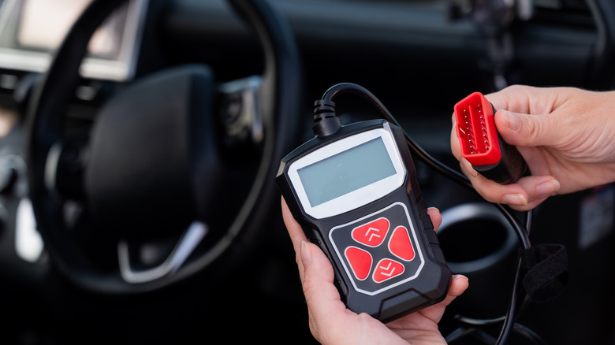

Warning lights
Engine light, ABS, airbag, emissions and other warnings should be described clearly.
Car diagnostics serviceCar diagnostics Feltham
Send warning light details, symptoms and vehicle information so the right diagnostic or MOT support route can be confirmed.
Mobile mechanic route
Drivers searching for car and engine diagnostics usually need a fast answer and a clear next step. This page is built to capture that search intent and route it into the estimator or contact form.
A diagnostic scan can provide fault code guidance, but faults may still need further testing depending on symptoms, vehicle history and live data.

Search intent
Better details reduce back-and-forth and make the appointment more useful.
Engine light, ABS, airbag, emissions and other warnings should be described clearly.
Car diagnostics serviceTell us if the car is in limp mode, misfiring, hard to start or showing intermittent faults.
Send symptomsIf the diagnostic request is MOT-related, send the due date or fail sheet too.
MOT prep and fault checksMove between mobile mechanic, pricing, area and contact routes without starting again.
All servicesPricingAreas coveredContactSend vehicle make/model/year, warning light photos, symptoms, when the fault started, postcode and whether the car is safe to drive.
Send detailsUse recent jobs and gallery pages to build trust before sending a quote request.
Recent jobsGalleryFAQ
No. A diagnostic scan gives fault code guidance and next steps. Repair work depends on what the diagnostic information shows.
Yes. Warning lights and symptoms before an MOT can be checked so the next route is clearer.
Say this in the enquiry. The route may need to change depending on safety, access and the fault type.
Send the symptoms and vehicle details so the diagnostic route can be confirmed.